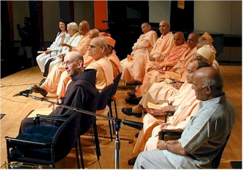
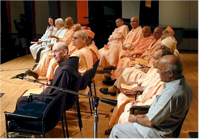

Ramakrishna-Vivekenanda Center of New York
Image Gallery
Tribute to the Spiritual Oneness of Humanity
September 22, 2002


 



A Unique Assembly in the City of New York of the Spiritual Leaders of all Ramakrishna Order Centers of North America New School University Tishman Auditorium, September 22, 2002
Distinguished Participants (Image 2)
Front Row (left to right):
Mrs. Jan Gelberman
(Musical Artist)
Rabbi Gelberman
(The New Synagogue and All Faiths Seminary International),
Swami Jitatmananda
(Head, Ramakrishna Ashrama, Rajkot, India),
Swami Prabuddhananda
(Vedanta Society of Northern California, San Francisco, California)
Swami Pramathananda
(Vedanta Society of Toronto, Canada)
Swami Prabhananda
(Head, Ramakrishna Mission Institute of Culture, Calcutta )
Swami Swahananda
(Vedanta Society of Southern California, Hollywood, California)
Father Patrick Fitzgerald, O.F.M
(St. Francis of Assisi Church and Friary of New York)
Back Row (left to right):
Swami Yogatmananda
(Vedanta Society of Providence, Rhode Island)
Swami Tyagananda
(Ramakrishna Vedanta Society of Boston)
Swami Chidananda
(Vivekananda Vedanta Society of Chicago)
Swami Prapannananda
(Vedanta Society of Sacramento, California)
Swami Aparananda
(Vedanta Society of Berkeley, California)
Swami Shantarupananda
(Vedanta Society of Portland, Oregon)
Dr. P. Jayaraman
(Executive Director, Bharatiya Vidya Bhavan of New York)